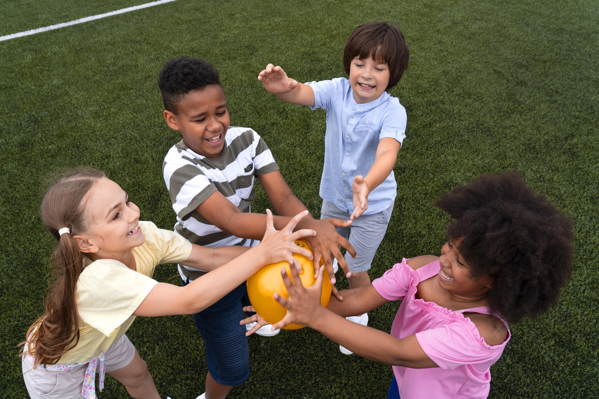
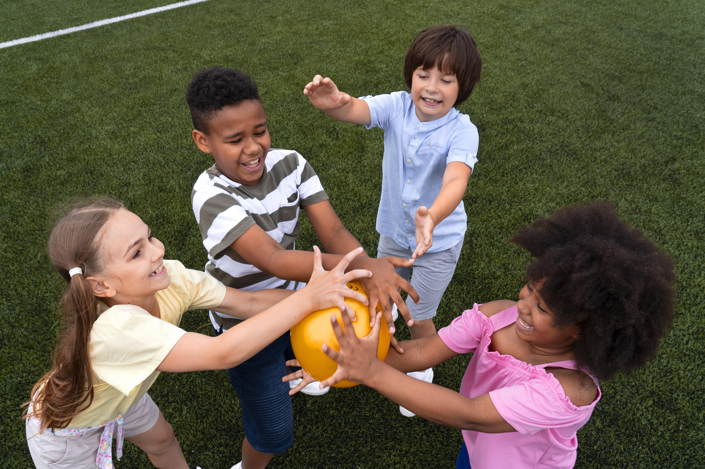
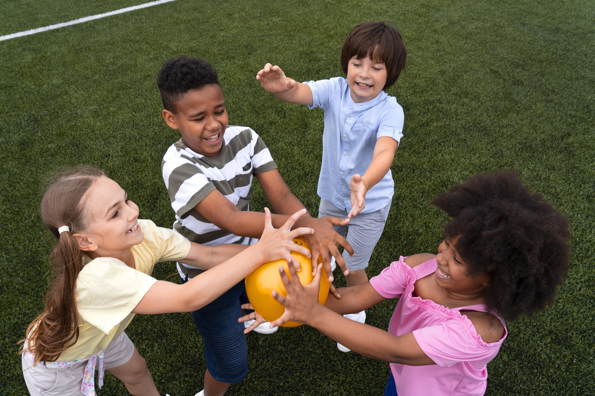

Galeria de Fotos
 



Na FutureKids, cada projeto nasce de um propósito: oferecer às crianças oportunidades reais de crescimento, aprendizado e inclusão...
Essa estrutura nos permite crescer com consistência, fortalecer parcerias e garantir que cada criança receba o cuidado e a atenção que merece.
Conheça nossos projetos

Crianças atendidas
Atividades realizadas
Participação média